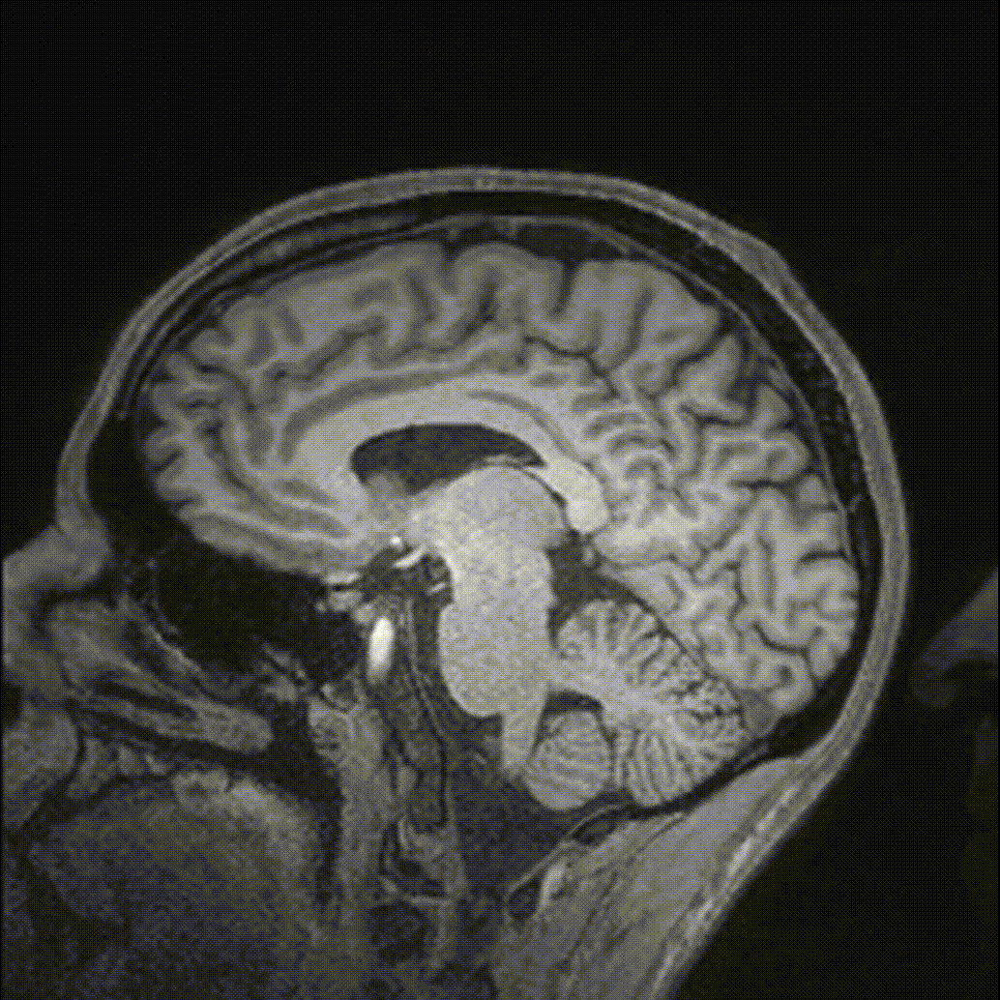
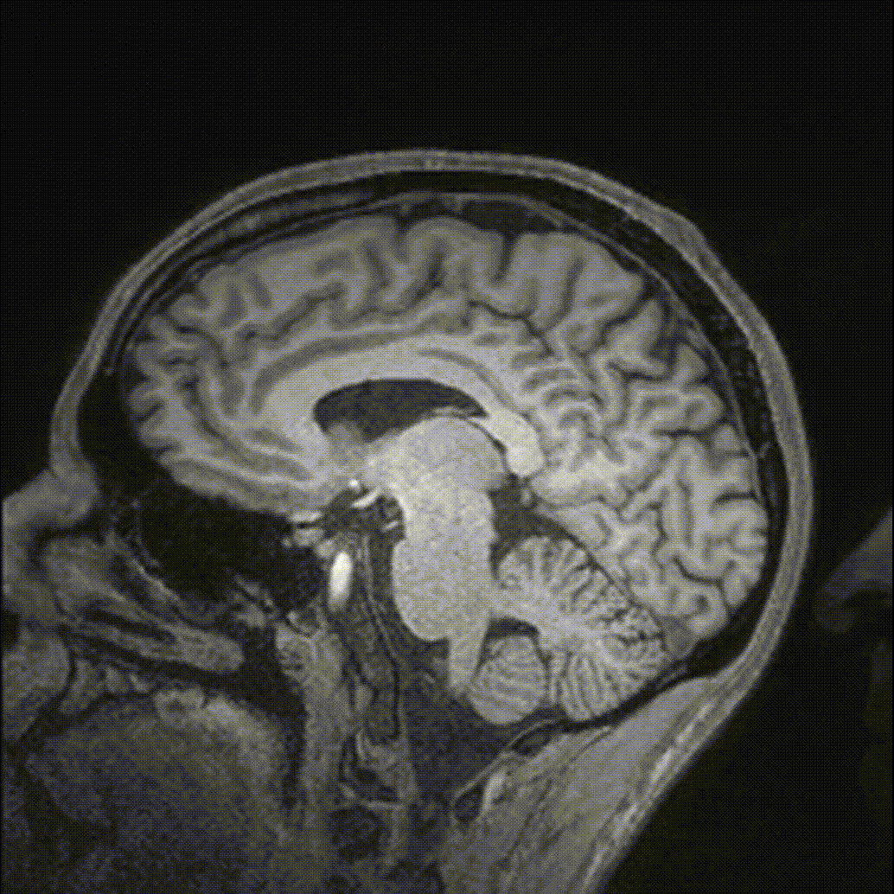

We are developing novel MRI methods, both
in vivo and
ex vivo to study neurodegenerative diseases.
Ex vivo MRI offers a bridge between
in vivo imaging and histopathology. While histopathology allows us to observe the microscopic changes in tissue structure or cellular composition caused by disease, the spatial scale of these mthods is quite limited.
Ex vivo MRI offers an opportunity to search out mesocopic changes in tissue at the scale of whole hemispheres or even whole brains. We work closely with the
Penn Frontotemporal Dementia Center and the
Penn Alzheimer's Disease Core Center to develop and evaluate ex vivo pulse sequences, studying how to maximize sensitivity to the microscopic pathological features of interest. A further translational goal of this work is to take the lessons learned from senitizing
ex vivo MRI, and work to transition these methods to
in vivo use as disease biomarkers. We are currently developing pulse sequences and analysis pipelines to quantify both the spatial extent of iron across the cortex, and the specific cortical laminar distribution of iron in focal disease regions.
MS Yao, A Van, J Gee, M Grossman, DJ Irwin, and MD Tisdall. Evaluating Echo Planar Spectroscopic Imaging with a Columnar Excitation for "Virtual Biopsies". Proceedings of the 2023 ISMRM Annual Meeting. 2023
MD Tisdall, DT
Ohm, R Lobrovich, SR Das, G Mizsei, K Prabhakaran, R Ittyerah, S Lim, CT
McMillan, DA Wolk, J Gee, JQ Trojanowski, EB Lee, JA Detre, P Yushkevich, M
Grossman, and DJ Irwin. Ex vivo MRI and histopathology detect novel iron-rich cortical inflammation in frontotemporal lobar degeneration with tau versus TDP-43 pathology. NeuroImage: Clinical. 2022 33:102913
MD Tisdall, DT Ohm, R Lobrovich, SR Das, G Mizsei, K Prabhakaran, R Ittyerah, S Lim, CT McMillan, DA Wolk, J Gee, JQ Trojanowski, EB Lee, JA Detre, P Yushkevich, M Grossman, and DJ Irwin. T2*-weighted ex vivo whole-hemisphere 7 T MRI localizes novel focal iron-rich pathology in frontotemporal lobar degeneration. Proceedings of the 2021 ISMRM Annual Meeting. 2021. p 1920
 
